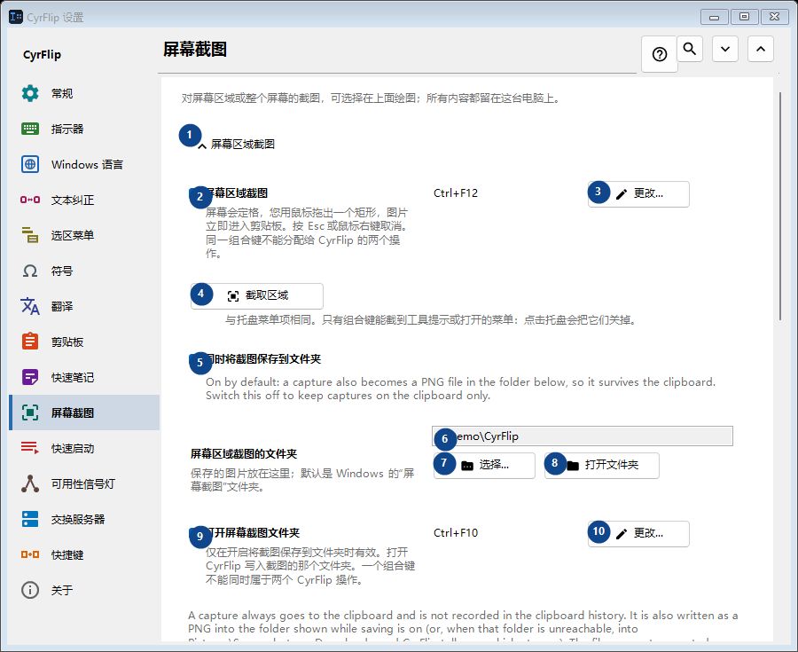
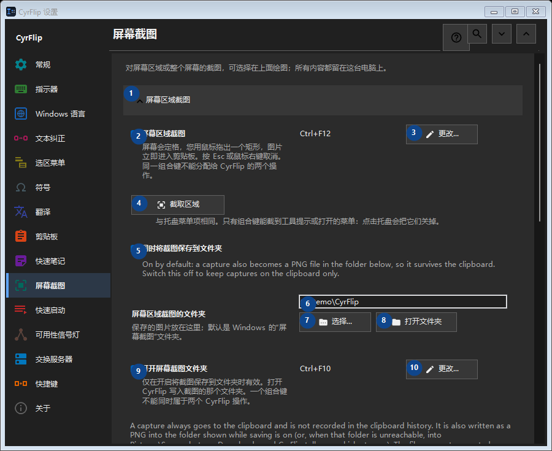

屏幕截图
用途
对屏幕区域或整个屏幕的截图，可选择在上面绘图；所有内容都留在这台电脑上。


使用顺序
设置立即生效，无须按固定顺序操作；请使用以下分组。
界面元素
1. 屏幕区域截图
需要执行上述操作时使用此命令。接受前请阅读确认提示。
你的快捷键2. 屏幕区域截图
屏幕会定格，您用鼠标拖出一个矩形，图片立即进入剪贴板。按 Esc 或鼠标右键取消。同一组合键不能分配给 CyrFlip 的两个操作。
你的快捷键3. 更改 - 屏幕区域截图
需要执行上述操作时使用此命令。接受前请阅读确认提示。
你的快捷键4. 截取区域
与托盘菜单项相同。只有组合键能截到工具提示或打开的菜单：点击托盘会把它们关掉。
你的快捷键5. 同时将截图保存到文件夹
On by default: a capture also becomes a PNG file in the folder below, so it survives the clipboard. Switch this off to keep captures on the clipboard only.
你的快捷键6. 屏幕区域截图的文件夹
选择或输入旁边标签所指的值。继续前请检查。
你的快捷键7. 选择 - 屏幕区域截图的文件夹
需要执行上述操作时使用此命令。接受前请阅读确认提示。
你的快捷键8. 打开文件夹 - 屏幕区域截图的文件夹
需要执行上述操作时使用此命令。接受前请阅读确认提示。
你的快捷键9. 打开屏幕截图文件夹
仅在开启将截图保存到文件夹时有效。打开 CyrFlip 写入截图的那个文件夹。一个组合键不能同时属于两个 CyrFlip 操作。
你的快捷键10. 更改 - 打开屏幕截图文件夹
需要执行上述操作时使用此命令。接受前请阅读确认提示。
你的快捷键11. 全屏截图
需要执行上述操作时使用此命令。接受前请阅读确认提示。
你的快捷键12. 全屏截图
一键操作：所有显示器作为一张图片被截取并直接放入剪贴板。屏幕上不会有任何定格。
你的快捷键13. 更改 - 全屏截图
需要执行上述操作时使用此命令。接受前请阅读确认提示。
你的快捷键14. 截取整个屏幕
与托盘菜单项"全屏截图"相同。
你的快捷键15. 在截图上绘图
需要执行上述操作时使用此命令。接受前请阅读确认提示。
你的快捷键16. 在截图上绘图
截图后，冻结的画面会留在屏幕上 - 可在上面绘制椭圆、矩形、直线和箭头。
你的快捷键17. 区域截图并绘图
Capture a selected region and draw on it. One chord cannot belong to two CyrFlip actions.
你的快捷键18. 更改 - 区域截图并绘图
需要执行上述操作时使用此命令。接受前请阅读确认提示。
你的快捷键19. 全屏截图并绘图
Capture every display as one picture and draw on it. One chord cannot belong to two CyrFlip actions.
你的快捷键20. 更改 - 全屏截图并绘图
需要执行上述操作时使用此命令。接受前请阅读确认提示。
你的快捷键21. 截取区域并绘图
与"区域截图并绘图"组合键相同。
你的快捷键22. 截取整个屏幕并绘图
与"全屏截图并绘图"组合键相同。
你的快捷键